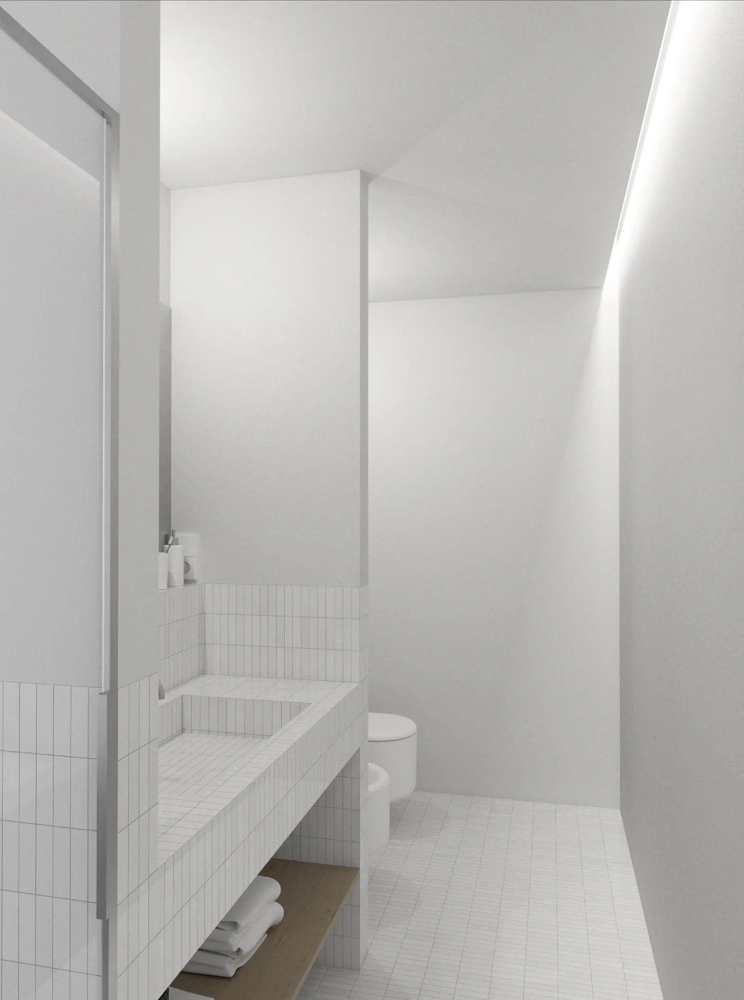

1 / 6
Casa AD
Appartamento
Via Malmusi, Modena, Italia
2025
con tilde studio
Appartamento
Via Malmusi, Modena, Italia
2025
con tilde studio
La zona giorno è un unico spazio lungo le finestre, scandito da portali. Render della zona giorno e della doccia VISION.
Samuele SilvestriArchitetto
Via Asiago 58, 41125 Modena
info@samuelesilvestriarchitetto.com
+39 366 493 8286
Instagram Iscr. Ordine degli Architetti di Modena n°1437 – sez. A
P.IVA 04180440366 Privacy


